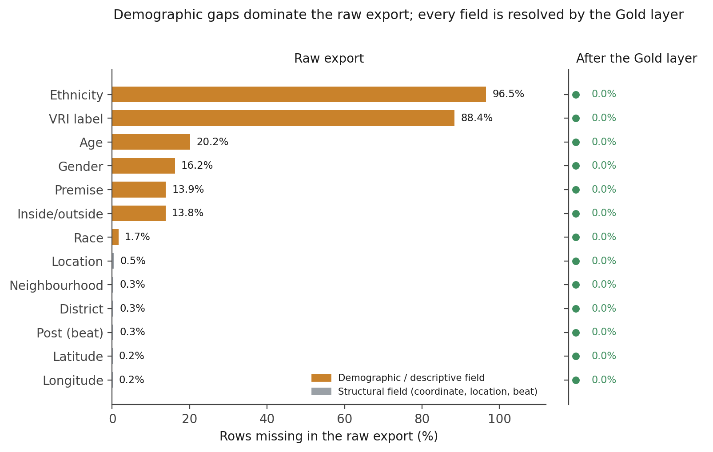
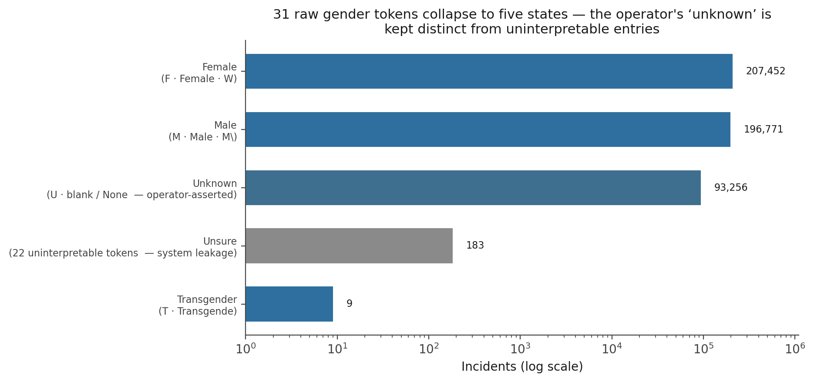
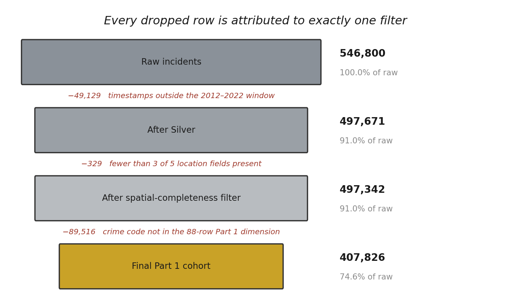
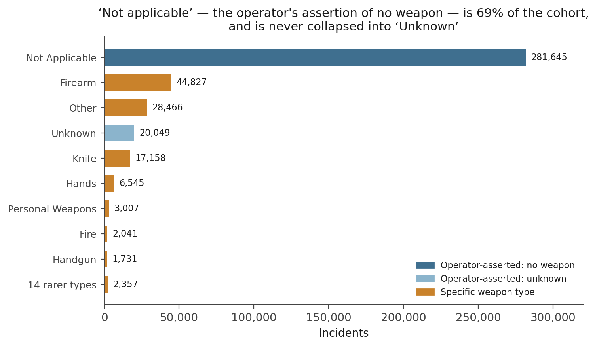
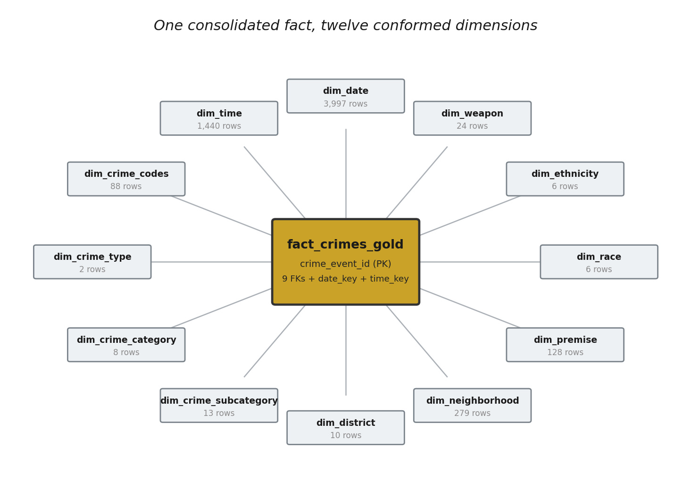
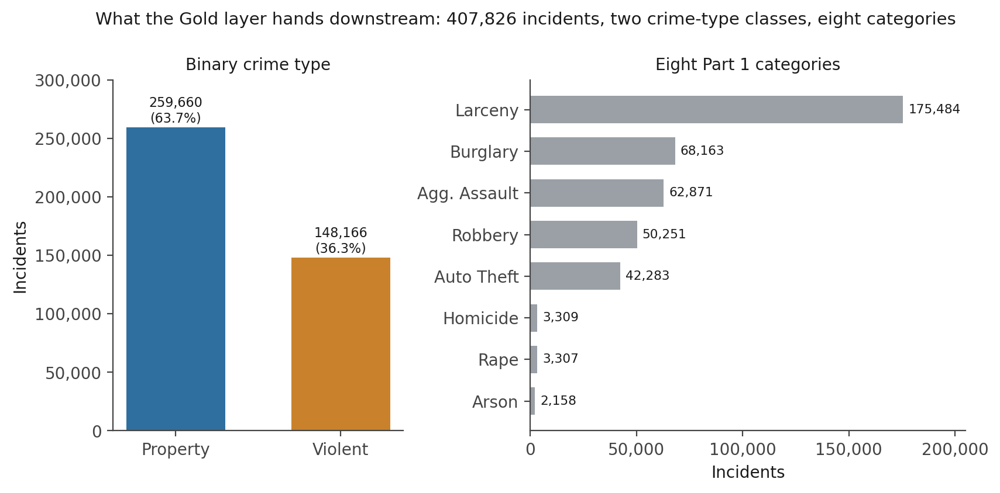

An Operator-Truth-Preserving Medallion ETL Pipeline for a City Part 1 Crime Archive
Turning a 546,800-row GeoJSON export and a 203-row code lookup into a validated 407,826-incident star schema — a Bronze → Silver → Gold contract, a three-state weapon vocabulary that never loses the operator’s ‘no weapon’ signal, and row accounting where every dropped record is attributed to one filter.
A four-tier medallion ETL pipeline for eleven years of municipal Part 1 (index) crime incidents. Operator-truth preservation: the source’s NA weapon token is an affirmative “no weapon involved” on 281,645 incidents (69% of the cohort) — it is kept as an explicit Not Applicable category, never folded into a null or an “unknown” bucket. Vocabulary harmonisation: 31 raw gender tokens collapse to five states, with the operator’s deliberate “unknown” held apart from 22 uninterpretable entries. Row accounting: 546,800 raw rows → 407,826, with every one of the 138,974 dropped records attributed to the temporal window, the spatial-completeness filter, or the Part 1 inner join. Output: 14 validated Parquet tables — a feature-engineered fact grain, a surrogate-keyed consolidated fact, and 12 conformed dimensions.
medallion architecture, bronze silver gold, ETL pipeline, star schema, Kimball dimensional model, data quality audit, sentinel encoding, operator-entered data, vocabulary harmonisation, surrogate keys, spatial enrichment, Parquet, GeoJSON, crime incident data, Part 1 crime, feature engineering, Python, pandas
Overview
This is the extract–transform–load (ETL) stage of a six-notebook project on eleven years of urban crime. It has one job: turn a raw municipal open-data export — 546,800 incident records in a GeoJSON file, plus a 203-row crime-code lookup and two spatial-enrichment assets — into an analysis-ready set of Parquet tables that the exploratory, modelling, fairness, clustering, and regression notebooks each load without re-running any upstream logic. The dataset is a large U.S. city’s Part 1 file: the serious “index” offences — homicide, rape, robbery, aggravated assault, burglary, larceny, auto theft, and arson — reported between 2012 and 2022. The city is not named here; the interest is in the pipeline, not the jurisdiction.
The pipeline follows a four-tier medallion architecture (Raw → Bronze → Silver → Gold), where each tier has a strict contract, a distinct fault-isolation boundary, and a persisted Parquet snapshot any consumer can reload independently. The finding that shapes every design decision is that this data was entered by people, under time pressure, into a constrained form — and the resulting artefacts are not random noise. A Weapon value of NA is not a missing value; it is an operator’s affirmative statement that no weapon was involved, and it is the single largest token in the column. A Gender value of U is a deliberate “I don’t know,” which is analytically different from the string 042819 that a fat-fingered entry produced. An Inside_Outside value of None was picked from a menu. The pipeline’s central principle is to preserve these operator-entered distinctions as explicit, named categories rather than collapsing them into a single null — because collapsing them silently destroys real signal, and in the weapon column that signal covers 69% of the cohort.
Pipeline architecture
Each tier knows strictly more about the data than the one before it. Raw knows nothing — it is a byte-for-byte snapshot. Bronze knows what the data looks like — column names, key fragments, dtypes. Silver knows what the data means — sentinels, controlled vocabularies, coordinate validity, the temporal window. Gold produces the analytical surface — spatial enrichment, the Part 1 filter, weapon unification, dimensional modelling, and 13 pre-computed features. The contract for each tier — and, just as important, what each tier must not do — is fixed (Figure 1, Table 1).
Figure 1
The Four-Tier Medallion Pipeline
![Top-to-bottom flow. Three source boxes (GeoJSON export 546,800 by 22; crime-codes lookup 203 rows narrowing to 88 Part 1; two RDS geocoding assets) feed a RAW tier (immutable Parquet snapshot). RAW flows to BRONZE (structural cleaning, snake_case, key repair, no value changed), then SILVER (business logic, sentinels, vocabulary harmonisation, bounding box, UTC window), then GOLD (spatial enrichment, 13 engineered features, operator-truth weapon unification), then a STAR SCHEMA of 12 dimensions plus a consolidated fact of 407,826 incidents across 14 Parquet tables.](assets/fig1_medallion_architecture.png)
Note. Every arrow adds knowledge, never rows in an uncontrolled way. Rows are removed at exactly three points, each documented (Figure 5).
Table 1
Tier Contracts in the Medallion Pipeline
| Tier | Knows | Does | Must not do | Persisted as |
|---|---|---|---|---|
| Raw | nothing | byte-for-byte Parquet snapshot of each source file | any transformation | crimes_incidents_raw (a geometry-bearing copy and a WKT-string copy), crime_codes_raw |
| Bronze | physical structure | snake_case normalisation; repair row_i_d → row_id and v_r_i_name → vri_name; assert the join key is present |
change any value, filter any row, add or drop a column | crimes_incidents_bronze (36.5 MB), crime_codes_bronze |
| Silver | domain meaning | sentinel → explicit token or NaN; vocabulary harmonisation; city bounding-box coordinate check; UTC-aware datetime parse; 2012–2022 window filter; Part 1 code filter (203 → 88) |
impute, derive cross-table features, drop rows without a documented reason | crimes_incidents_silver (40.0 MB), crime_codes_silver |
| Gold | analytical intent | spatial enrichment from geocoding assets; inner join to the Part 1 dimension; operator-truth weapon unification; 13 engineered features; star-schema construction | clean data-quality issues (Silver’s job); impute; use nullable extension dtypes | 14 Parquet tables (56.3 MB total) |
Note. The single deliberate row expansion is at the dimension boundary: dim_district carries 10 rows (9 patrol districts + an explicit Unknown member) and dim_neighbourhood carries 279 (278 + Unknown), so every fact row resolves to a real surrogate key rather than relying on pandas’ implicit NaN == NaN join behaviour.
Raw ingestion and audit
The GeoJSON source loads as a 546,800 × 22 GeoDataFrame; the crime-code lookup as 203 × 8. Both are snapshotted to Parquet before any transformation as the lineage anchor — if a downstream finding is ever challenged, the exact source state at run time can be reloaded without re-parsing the 322 MB GeoJSON. The audit that follows reads the untouched frame, names every structural and distributional problem, and establishes the evidence for each later transformation.
Structural artefacts
All 21 attribute columns carry mixed casing; two names fragment incorrectly under naive snake_case conversion (RowID → row_i_d, VRIName → v_r_i_name). The first is the join key for the Gold spatial-enrichment step, so its correct repair is a hard dependency. CrimeDateTime arrives as an object string with 359,213 distinct values — every temporal feature and both derived key columns depend on Silver’s UTC-aware parse. Two columns are inert: Total_Incidents is a constant 1 (a row-counter vestige), and Shape is 100% null (a geometry-metadata artefact). Both are carried to Gold and dropped there.
The missingness surface
Missingness is severe and structurally uneven (Figure 2). Ethnicity is absent on 96.5% of rows and VRIName on 88.4% — these are collection gaps, not pipeline faults, and the downstream notebooks treat their missingness rates as hard analytical constraints. Age (20.2%), Gender (16.2%), Premise (13.9%), and Inside_Outside (13.8%) sit in a middle band. Every structural field — the coordinate pair, Location, Neighborhood, District, Post — is missing on well under 1% of rows. The 900 rows (0.16%) with an identical missing count across Latitude, Longitude, and geometry are the same records: the bad-geocoding placeholder pairs the source writes as (0.0, 0.0) and the string (,).
Figure 2
The Raw Missingness Landscape, and Its Resolution

Note. Amber = demographic or descriptive field; grey = structural field. Silver and Gold resolve every gap either by an explicit token (Unknown, Unsure, Not Applicable) or, for age alone, by mean imputation — the one imputation the pipeline performs, made at Silver because every downstream consumer uses age as a continuous feature and a single consistent fill is preferable to five notebooks each choosing their own.
Vocabulary fragmentation
Gender carries 31 distinct non-null tokens; Weapon carries 24; Inside_Outside carries four tokens spanning two logical states. The unique-value counts understate the problem — the fragmentation is a mix of abbreviation variants, operator-asserted uncertainty tokens, and uninterpretable entries that need three qualitatively different treatments. Figures 3 and 4 make the two consequential cases concrete.
Bronze layer — structural cleaning
Bronze applies snake_case normalisation and two targeted fragment repairs, then asserts that row_id is present. No value is changed, no row is filtered, no column is added or removed. Shape is unchanged at 546,800 × 22; the Parquet file writes at 36.5 MB (down from a 535 MB in-memory footprint) under Snappy compression. Bronze is the reload point for any issue that traces to column naming, key-fragment repair, or join-key presence.
Silver layer — business-logic cleaning
Silver resolves each finding from the raw audit through an explicit, documented rule. The vocabulary work is where the operator-truth principle first bites (Table 2).
Table 2
Silver Vocabulary Harmonisation — Three Kinds of Operator Signal
| Source field | Raw state | Silver rule | Result |
|---|---|---|---|
inside_outside |
I, Inside, O, Outside, plus a 75,448-row null arm containing menu-selected None and genuine blanks |
map the four directional tokens to two states; route everything else — the whole null arm — to a third state | Inside, Outside, Unknown (3 states, zero nulls) |
gender |
31 non-null tokens: canonical forms, operator “unknown” (U), and 22 uninterpretable entries |
np.select: canonical forms → Female / Male / Transgender; U / blank → Unknown; default branch → Unsure |
Female 207,452 · Male 196,771 · Unknown 93,256 · Unsure 183 · Transgender 9 |
weapon |
NA (404,057 rows — the largest token), UNKNOWN, genuine blanks, and 21 specific weapon types |
resolved at Gold: NA → Not Applicable; UNKNOWN → Unknown; blank → dimension-side fallback, then Unknown |
24-token unified vocabulary, Not Applicable and Unknown semantically distinct (Figure 4) |
Note. The gender split is the pattern: the operator’s deliberate “I don’t know” (U, 11,943 raw rows) is analytically different from a value the system cannot interpret, so the two are kept in separate buckets. Collapsing them would inflate the “unknown” count with a small but real population of data-entry noise.
Figure 3 shows the gender collapse. The two canonical abbreviations account for 95% of non-null entries; the operator-asserted Unknown is a visible middle band; the entire uninterpretable tail is 183 rows across 22 token types.
Figure 3
31 Raw Gender Tokens Collapse to Five States

Note. Agender exists in the mapping for forward compatibility but no row in this eleven-year extract maps to it.
Coordinates and time. The enforce_bounding_box helper nulls latitude and longitude together for any pair where either component falls outside the city rectangle — a partially valid pair is as unusable spatially as a fully wrong one. This lifts the coordinate null count from 900 to 978 (the extra 78 are pairs that parsed cleanly but land outside the city). crime_date_time is parsed UTC-aware; rows outside the 2012–2022 operational window are removed. This is the single largest row loss in the pipeline: 49,127 pre-2012 timestamps (legacy-system contamination) plus 2 unparseable values, for 49,129 rows. Silver output: 497,671 × 25.
The crime-code lookup. Silver proper-cases the labels, renames the opaque source columns, and filters crime_class == "PART 1" — reducing the lookup from 203 to 88 rows. This filter defines the analytical cohort: the Gold inner join on crime_code will exclude any fact row whose code is not among these 88. A derived crime_category field maps the fine-grained subcategory strings to the eight canonical buckets (39 of the 88 codes are Robbery variants; 17 are Arson; the rest spread across the other six).
Gold layer — the analytical fact grain
Gold operates on Silver inputs only and applies five things in sequence.
Spatial enrichment. Two geocoding assets from a prior mapping-API pass are coalesced into the frame with combine_first, filling only where Silver’s value was NaN — a valid Silver coordinate is never overwritten. The bounding box is re-enforced (geocoders occasionally return out-of-city points), then rows with fewer than three of the five key location fields populated are dropped: 497,671 → 497,342, a loss of 329.
The Part 1 join. An inner join on crime_code against the 88-row dimension brings the cohort to its final size: 497,342 → 407,826, excluding 89,516 rows whose codes are Part 2 misdemeanours, calls-for-service, or administrative entries. Deduplication on row_id finds zero duplicates — the join produced no fan-out. Figure 5 is the complete row ledger.
Figure 5
Cohort Row Accounting — Every Dropped Record Attributed

Note. 546,800 − 49,129 − 329 − 89,516 = 407,826. No other step removes a row.
Operator-truth weapon unification. Two standardisers run before a combine_first merge. The fact-side function preserves NA → Not Applicable and UNKNOWN → Unknown as terminal sentinels while routing genuine blanks to NaN; the dimension-side function — working from a coarse four-token fallback taxonomy that carries no operator-truth distinctions — routes everything null-flavoured to NaN. The fact signal wins where it exists; any residual NaN becomes Unknown. The result (Figure 4): Not Applicable is 281,645 incidents — 69.06% of the cohort — and it is a first-class category, never folded into the 20,049-row Unknown bucket or into a null.
Figure 4
The Unified Weapon Vocabulary — ‘Not Applicable’ Is a Category, Not a Gap

Note. Any weapon analysis in the downstream notebooks must treat Not Applicable and Unknown as separate categories; a single “missing weapon” bucket would merge an affirmative signal with an absence of one.
Feature engineering. Gold adds 13 analytical columns on the fact grain (Table 3) and drops the descriptive scaffolding. Final fact-grain shape: 407,826 × 36.
Table 3
The 13 Engineered Gold Features
| Group | Feature | Definition |
|---|---|---|
| Temporal (7) | HourOfDay, MinuteOfHour |
extracted from the UTC timestamp |
DayOfWeekName, DayOfWeekNumber |
1 = Monday … 7 = Sunday | |
IsWeekend |
DayOfWeekNumber ≥ 6 |
|
PartOfDay |
Morning 05:00–11:59 · Afternoon 12:00–16:59 · Evening 17:00–20:59 · Night 21:00–04:59 | |
IsNightTime |
True for hours 21:00–04:59 |
|
| Severity (3) | CrimeCategoryIndex |
ordinal 1–8 over the eight Part 1 categories |
WeaponSeverityIndex |
lethality gradient 1–5; Unknown and Not Applicable both at the floor, the string column keeping them distinct |
|
CrimeSeverityScore |
(BaseCrimeSeverity × 10) + WeaponSeverityIndex; range 11–55 |
|
| Spatial (1) | HasValidCoordinates |
both coordinates non-null — uniformly True in the final cohort |
| Behavioural (2) | InsideOutsideIndex |
Inside = 1 · Outside = 2 · Unknown = 3 |
IsRepeatLocation |
True where the location string occurs more than once in the cohort |
Note. The mixed-case naming deliberately marks these as engineered, distinguishing them from the snake_case source-derived columns. CrimeCategoryIndex and InsideOutsideIndex inherit a category dtype from map() over a categorical source; a downstream .astype(int) is needed before model training.
Dimensions and the consolidated fact
Twelve dimension tables wrap the fact grain (Figure 6). Ten are thin drop_duplicates constructions with a 1-indexed surrogate key; dim_crime_codes is a Silver pass-through; dim_date (3,997 rows, one per calendar date) and dim_time (1,440 rows, one per minute of the day) carry pre-computed calendar and clock attributes. The consolidated fact_crimes_gold merges every dimension’s surrogate key back onto the enriched rows, assigns its own crime_event_id primary key, and drops the descriptive columns and the two free-form text fields (address, location). Result: 407,826 × 35, integer-keyed, with zero missing surrogate keys across all 12 key columns — no join in the chain relies on NaN == NaN.
Figure 6
The Star Schema — fact_crimes_gold and 12 Conformed Dimensions

Note. dim_district and dim_neighbourhood each include an explicit Unknown member (rows 10 and 279 respectively) that absorbs the small structural null arm Silver preserved.
The complete Gold layer is 14 Parquet files, 56.3 MB (Table 4).
Table 4
Gold Layer Inventory
| Table | Rows | Columns | Size |
|---|---|---|---|
crimes_incidents_gold |
407,826 | 36 | 32.53 MB |
fact_crimes_gold |
407,826 | 35 | 23.60 MB |
dim_date_gold |
3,997 | 10 | 0.08 MB |
dim_time_gold |
1,440 | 5 | 0.02 MB |
dim_neighbourhood_gold |
279 | 2 | 0.01 MB |
dim_premise_gold |
128 | 2 | < 0.01 MB |
dim_crime_codes_gold |
88 | 8 | 0.01 MB |
dim_weapon_gold |
24 | 2 | < 0.01 MB |
dim_crime_subcategory_gold |
13 | 2 | < 0.01 MB |
dim_district_gold |
10 | 2 | < 0.01 MB |
dim_crime_category_gold |
8 | 2 | < 0.01 MB |
dim_race_gold · dim_ethnicity_gold |
6 each | 2 | < 0.01 MB |
dim_crime_type_gold |
2 | 2 | < 0.01 MB |
Note. Persistence uses use_dictionary=False so that category-dtype columns survive the Parquet round-trip intact — across some PyArrow versions the pandas categorical metadata is lost when Parquet’s own dictionary encoding is also active, and the column returns as plain object.
Validation
Nine pre-conditions are asserted before the layer is released to the downstream notebooks (Table 5). All pass.
Table 5
Pipeline Validation Checks
| # | Check | Result |
|---|---|---|
| 1 | Fact grain is non-empty | 407,826 rows |
| 2 | Every surrogate key on the consolidated fact is populated | 0 missing across 12 key columns |
| 3 | crime_event_id is uniquely 1-indexed |
407,826 unique / 407,826 rows |
| 4 | Every non-null coordinate is inside the city bounding box | 407,826 in box / 407,826 with coordinates |
| 5 | Temporal range is inside 2012–2022 | 2012-01-01 → 2022-12-10 |
| 6 | WeaponSeverityIndex carries its full gradient |
5 distinct values |
| 7 | inside_outside is a three-state vocabulary with no NaN |
{Inside, Outside, Unknown}, 0 nulls |
| 8 | No nullable extension dtypes in the fact grain | none |
| 9 | Parquet round-trip preserves the category dtype |
weapon_unified returns as category |
Note. Check 6 guards a specific prior bug: the severity function once compared against upper-case strings while the upstream chain produced Title Case, silently collapsing every row to severity 1. Aligning the comparison vocabulary with the actual output fixed it, and this check keeps it fixed.
A shape verification also asserts all 14 tables against hardcoded expected dimensions — a deviation is a pipeline bug, not a configuration value.
Carry-forward findings
Five facts the downstream notebooks inherit and must account for.
The cohort is fully geocoded.
HasValidCoordinatesis uniformlyTrueacross all 407,826 rows; spatial analyses can treat the coordinate pair as complete without a pre-filter. The final composition is 63.7% property crime (259,660) and 36.3% violent crime (148,166), across eight categories fromLarceny(175,484) down toArson(2,158) — the class balance that the binary-classification notebook works from (Figure 7).weapon_unifiedhas two operator-truth tokens.Not Applicable(281,645; 69.1%) andUnknown(20,049; 4.9%) are distinct categories. Any weapon analysis that merges them merges an affirmative “no weapon” with an absence of information.districtandneighbourhoodcarry an explicitUnknownmember. 1,452 and 1,483 rows respectively resolve to it. Spatial aggregations produce anUnknowngroup that should be acknowledged, not silently dropped.ethnicityis 96.5%Unknownandvri_name88.4% missing. These are collection gaps.ethnicitycannot support a stratification analysis; treat its missingness rate as a hard ceiling on what the column can do.ageis the only imputed column. Its residual nulls were mean-filled at Silver. Models that lean onageshould carry a note that a minority of values are imputed, not observed.
Figure 7
What the Gold Layer Hands Downstream

Note. Counts are read from the persisted fact_crimes_gold joined to its category dimensions.
Tools and references
Built in Python with pandas and pyarrow for the medallion layers and Parquet persistence, geopandas for the GeoJSON source read, and pyreadr for the two R-serialised geocoding assets. The dimensional model follows the Kimball star-schema method. The Part 1 offence grouping is the Uniform Crime Reporting Program’s index-crime definition.
Harris, C. R., Millman, K. J., van der Walt, S. J., Gommers, R., Virtanen, P., Cournapeau, D., Wieser, E., Taylor, J., Berg, S., Smith, N. J., Kern, R., Picus, M., Hoyer, S., van Kerkwijk, M. H., Brett, M., Haldane, A., del Río, J. F., Wiebe, M., Peterson, P., … Oliphant, T. E. (2020). Array programming with NumPy. Nature, 585, 357–362. https://doi.org/10.1038/s41586-020-2649-2
Jordahl, K., Van den Bossche, J., Fleischmann, M., Wasserman, J., McBride, J., Gerard, J., Tratner, J., Perry, M., Badaracco, A. G., Farmer, C., Hjelle, G. A., Snow, A. D., Cochran, M., Gillies, S., Culbertson, L., Bartos, M., Eubank, N., Bilogur, A., Rey, S., … Leblanc, F. (2020). geopandas/geopandas: v0.8.1 [Computer software]. Zenodo. https://doi.org/10.5281/zenodo.3946761
Kimball, R., & Ross, M. (2013). The data warehouse toolkit: The definitive guide to dimensional modeling (3rd ed.). Wiley.
The pandas development team. (2020). pandas-dev/pandas: Pandas [Computer software]. Zenodo. https://doi.org/10.5281/zenodo.3509134
United States Department of Justice, Federal Bureau of Investigation. (2004). Uniform Crime Reporting handbook. U.S. Department of Justice.
Baltimore Police Department. (2022). Part 1 crime data [Data set]. Open Baltimore. Retrieved December 13, 2022, from https://data.baltimorecity.gov/
Pipeline and figures by the author. Every headline figure in this article was reproduced from the raw sources by replaying the full Bronze → Silver → Gold chain; the 14 Gold Parquet tables described here are the sole data input for every downstream notebook in the project.